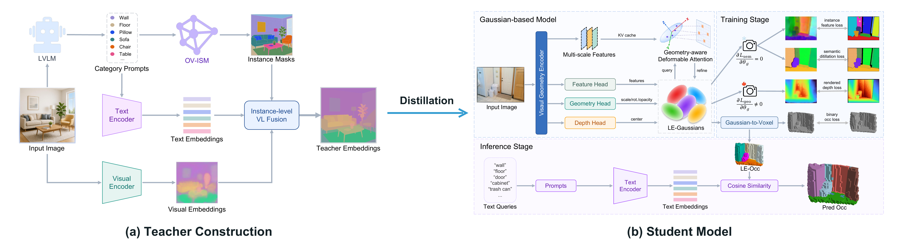
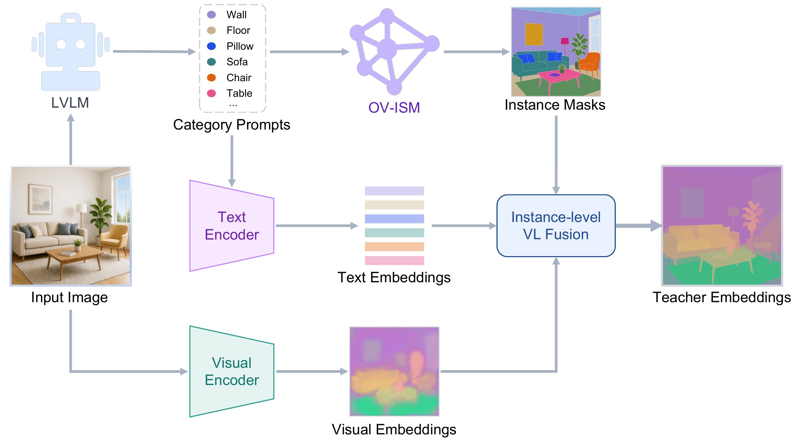
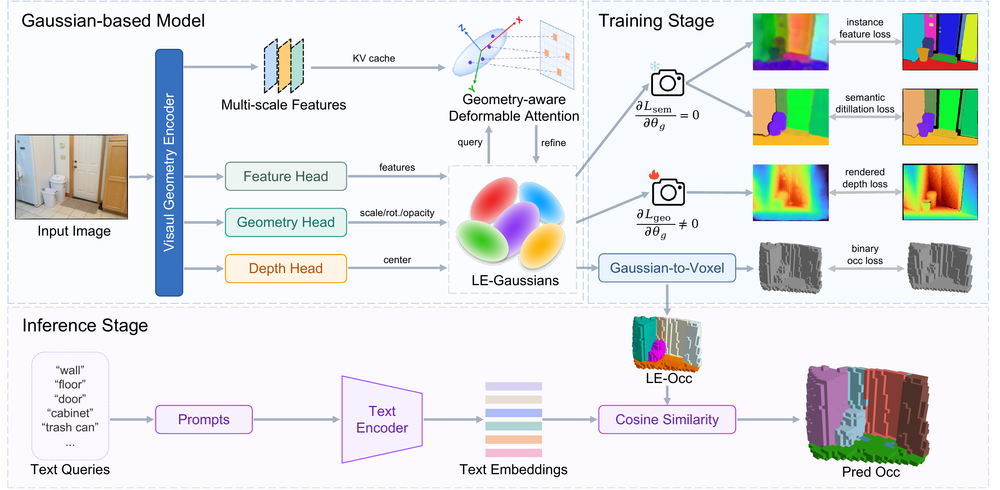

Instance-aware VL Teacher
Instance-level semantic supervision through confidence-calibrated fusion of visual and language features, combining object appearance with linguistic semantics to enhance open-vocabulary understanding.

Instance-level semantic supervision through confidence-calibrated fusion of visual and language features, combining object appearance with linguistic semantics to enhance open-vocabulary understanding.
A Gaussian-based open-vocabulary occupancy framework that employs geometry-aware deformable attention for semantic refinement and decoupled semantic distillation to mitigate geometry-semantic interference.
OpenOcc-ScanNet and OpenOcc-Replica, two extended benchmarks with more diverse and fine-grained semantic categories for open-vocabulary monocular occupancy evaluation.
OVM-Occ achieves 33.25 mIoU on Occ-ScanNet, outperforming the previous state-of-the-art method by 12.20 points, and consistently surpasses baselines on OpenOcc-ScanNet and OpenOcc-Replica.
Monocular occupancy prediction in indoor scenes aims to recover a scene’s 3D geometry and semantics from a single RGB image. Existing methods are restricted to a closed set of predefined categories, limiting their ability to generalize to unseen categories. This limitation is particularly critical in indoor scenes, where objects exhibit highly diverse and fine-grained semantic categories. We study open-vocabulary monocular occupancy prediction for indoor scenes and present OVM-Occ, a Gaussian-based occupancy framework with an instance-aware vision-language teacher. Specifically, we adopt Language-Embedded Gaussians as the intermediate scene representation, propose a geometry-aware deformable attention module to refine Gaussian semantic features, and construct instance-level vision-language embeddings to provide reliable semantic supervision. We further introduce geometry-aware decoupled semantic distillation to mitigate the interference between geometry learning and semantic learning. To evaluate open-vocabulary occupancy prediction performance, we introduce OpenOcc-ScanNet and OpenOcc-Replica, two extended benchmarks with more diverse and fine-grained semantic categories. Experiments show that our method achieves state-of-the-art performance in open-vocabulary monocular occupancy prediction for indoor scenes, outperforming the previous state-of-the-art approach by 12.2 mIoU and 0.6 IoU on the Occ-ScanNet dataset, with consistent gains under new open-vocabulary evaluation protocols.
OVM-Occ predicts 3D scene occupancy from a single RGB image and assigns semantic labels to occupied voxels based on user-defined text queries, enabling flexible recognition of diverse object categories without model retraining.


| Method | IoU | Ceiling | Floor | Wall | Window | Chair | Bed | Sofa | Table | TVs | Furniture | Objects | mIoU |
|---|---|---|---|---|---|---|---|---|---|---|---|---|---|
| POP-3D | 35.32 | 0.00 | 23.89 | 16.59 | 0.01 | 4.62 | 8.65 | 2.01 | 7.61 | 0.00 | 2.14 | 0.08 | 5.96 |
| LOcc | 36.70 | 0.00 | 24.40 | 17.37 | 1.83 | 9.31 | 10.73 | 23.42 | 11.29 | 0.01 | 3.15 | 0.19 | 9.25 |
| LegoOcc | 59.50 | 17.81 | 41.65 | 28.52 | 18.91 | 19.32 | 33.05 | 34.92 | 19.16 | 5.36 | 5.88 | 6.94 | 21.05 |
| OVM-Occ (Ours) | 60.10 | 44.82 | 52.76 | 36.78 | 19.38 | 33.22 | 52.07 | 50.90 | 30.92 | 3.88 | 25.63 | 15.33 | 33.25 |
| Method | IoU | Cabinet | Counter | Pillow | Books | Towel | Mirror | Fridge | Toilet | Sink | Bathtub | mIoU (11-class) | mIoU (20-class) | mIoU (40-class) |
|---|---|---|---|---|---|---|---|---|---|---|---|---|---|---|
| POP-3D | 48.94 | 0.28 | 4.54 | 0.11 | 0.00 | 9.28 | 0.00 | 7.97 | 9.79 | 11.02 | 1.07 | 13.22 | 11.37 | 6.19 |
| LOcc | 44.70 | 17.30 | 26.17 | 0.00 | 0.00 | 0.00 | 0.00 | 17.39 | 14.25 | 9.84 | 37.87 | 18.89 | 21.86 | 12.91 |
| LegoOcc | 56.22 | 8.73 | 9.10 | 9.13 | 10.63 | 6.15 | 0.00 | 4.96 | 13.82 | 17.13 | 33.41 | 23.77 | 20.64 | 12.93 |
| OVM-Occ (Ours) | 56.82 | 22.77 | 21.44 | 28.82 | 19.68 | 18.62 | 24.06 | 19.56 | 32.06 | 38.18 | 57.38 | 32.40 | 30.83 | 21.79 |
OVM-Occ integrates multi-frame occupancy predictions through cumulative voting to construct a globally consistent 3D semantic occupancy map.
@misc{yu2026ovmocc,
title={OVM-Occ: Open-Vocabulary Monocular Occupancy Prediction via Geometry-Aware Vision-Language Distillation},
author={Shuyang Yu and Haibo Qin and Shaohan Hu and Wei Shan and Xiaoqing Guan and You Wang and Guang Li},
year={2026},
eprint={2610.35312},
archivePrefix={arXiv},
primaryClass={cs.CV},
url={https://arxiv.org/abs/2610.35312},
}